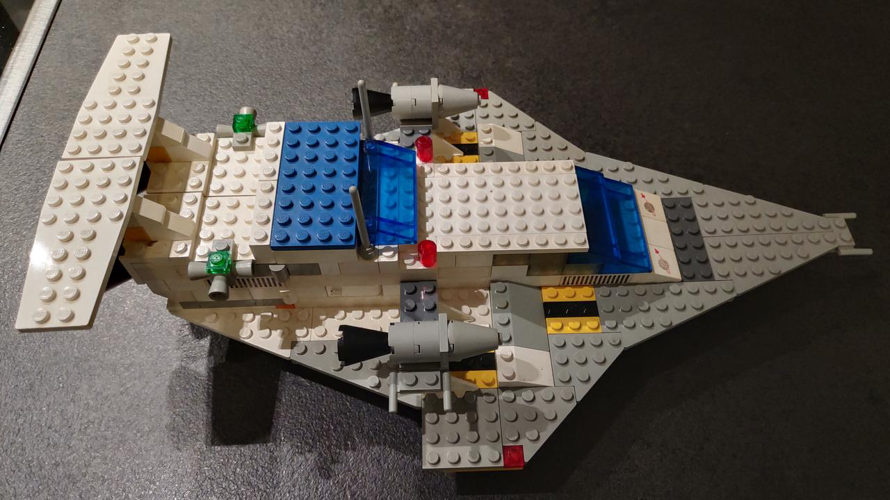
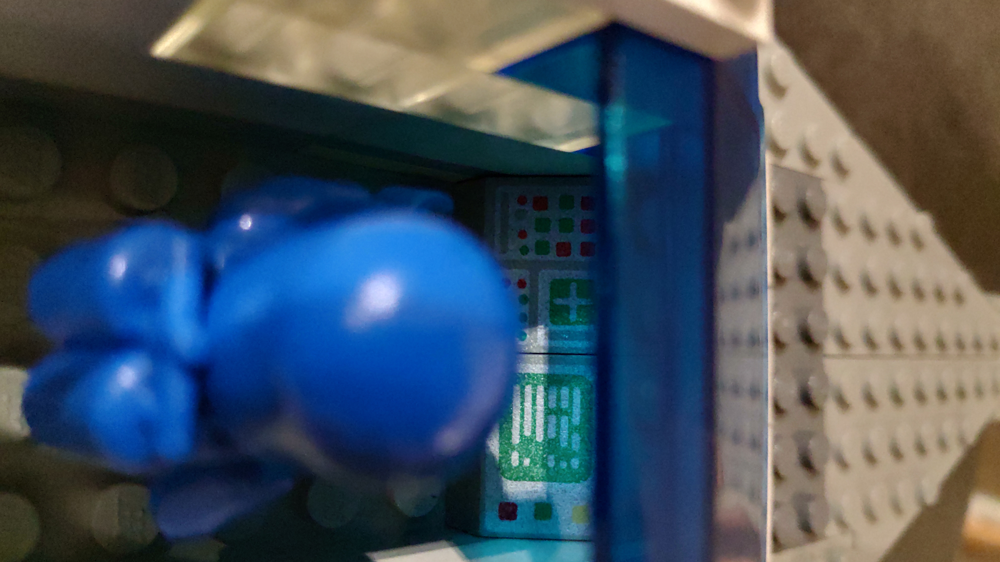
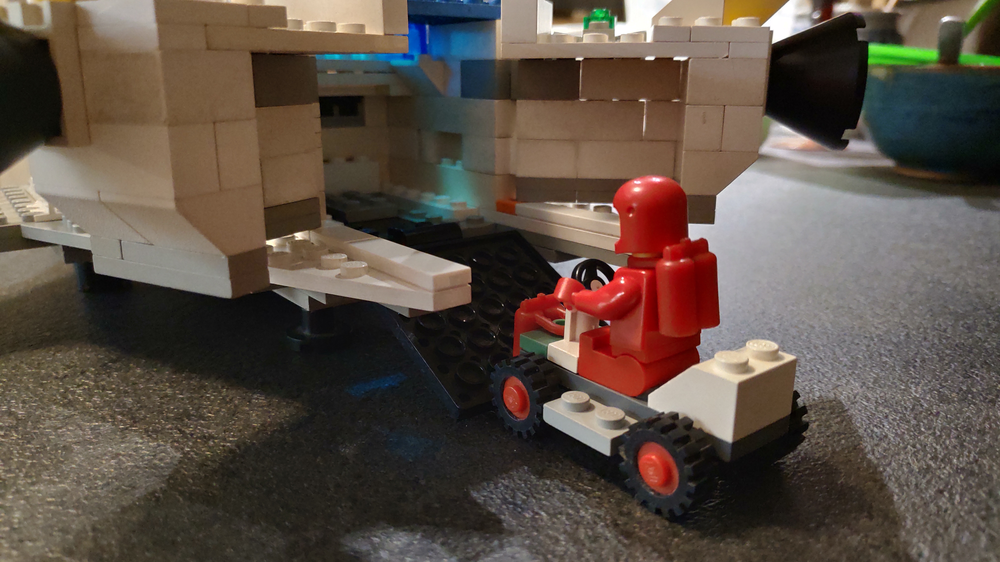

Lego
Barmherzigkeit
Heute vor 29 Jahren hat der hl. Papst Johannes-Paul II. die polnische Ordnesschwester Sr. Faustina heiliggessprochen. Am selben Tag hat der Papst das Fest der Göttlichen Barmherzigkeit für den zweiten Sonntag nach Ostern eingeführt.
Dieses Jahr war Ostern ein besonderes Fest - ich glaube fest daran, dass uns spezielle Gnaden geschenkt wurden. Am Ostersonntag verspürte ich auf jeden Fall eine tiefe Freude über Jesu Auferstehung, sie war voller Frieden. Natürlich war und ist es schmerzhaft, Jesus nicht in der Eucharistie empfangen zu können. Aber gerade dieser Hunger nach Jesus ist eine gute Vorbereitung auf die nächste Kommunion.
Barmherzig sein bedeutet nicht, alles okay finden; oder Verletzungen einfach zu vergessen. Wunden kann man nicht vergessen. Barmherzigkeit ist mehr: sie ist der Sieg der Liebe über alle Wunden. In der Barmherzigkeit ist die Liebe stärker als alle Schuld. Wenn Barmherzigkeit in einer Freundschaft oder Ehe gelebt wird, dann wird die Liebe dadurch viel stärker. Gottes Barmherzigkeit zeigt sich gerade zu Ostern im Sieg Jesu über Sünde und Tod. Gottes Sohn hat uns am Kreuz erlöst - seine glorreiche Auferstehung macht diesen Sieg sichtbar. Gibt es eine Grenze? Gottes Barmherzigkeit hat keine Limits und keine Grenzen.
Lego
In den letzten Wochen habe ich mit unseren Kindern alte Lego-Modelle aus meiner Kindheit wieder aufgebaut. Besonders der Zug hat den Kindern sehr gefallen. Erstaunlicherweise hat er noch immer sehr gut funktioniert - sogar die Weichen und das Stop-Signal.
Aus den Legosteinen konnte ich mein Traum-Raumschiff von Lego nachbauen. Allerdings fehlen mir die wesentlichen Teile: die gelben transparenten Fenster und Platten. Da ich ein paar blau-transparente Teile gefunden habe, entschied ich mich, den Rest des Raumschiffes nicht in blau, sondern in Weiß zu bauen. Mit dem Ergebnis bin ich zufrieden.

Figure 1: Galaxy Explorer
Im nächsten Foto blicken wir dem Astronauten über die Schulter: wir erkennen die Bordcomputer und die Steuerelemente. Hinter ihm hätte der zweite Astronaut noch Platz.

Figure 2: Pilot
Das Raumschiff ist groß genug, ein kleines Raumfahrzeug zu transportieren. Einfacher als dieses kleine Fahrzeug geht es nicht mehr - und gerade deshalb ist das kleine Auto genial.

Figure 3: Little Space Car
Außerdem habe ich den Flughafen, ein Passagierflugzeug und einen Helikopter gebaut. Besonders stolz bin ich jedoch auf den Nachbau des allerersten Lego-Technik-Modells: ein roter Traktor mit "Grasschneide-Maschine". Die Maschine kann man mit einem Hebel heben und senken. Die Lenkung und die Zahnräder gehen sehr leicht.

Figure 4: Traktor Lego-Technik 851

Figure 5: Grasschneide-Maschine
Spaziergang
Heute bin ich nicht spazieren gegangen - ich war zu müde. Die letzten Tage und Woche war wir mit unseren Kindern fast täglich im Wald oder an der Glan unterwegs.